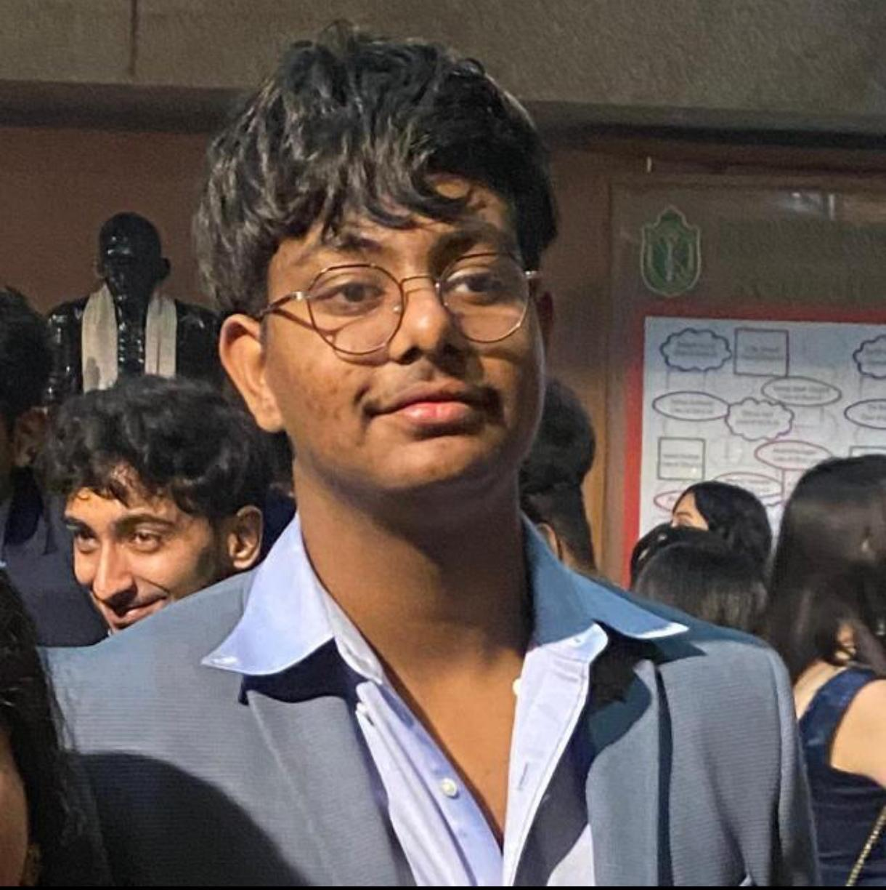
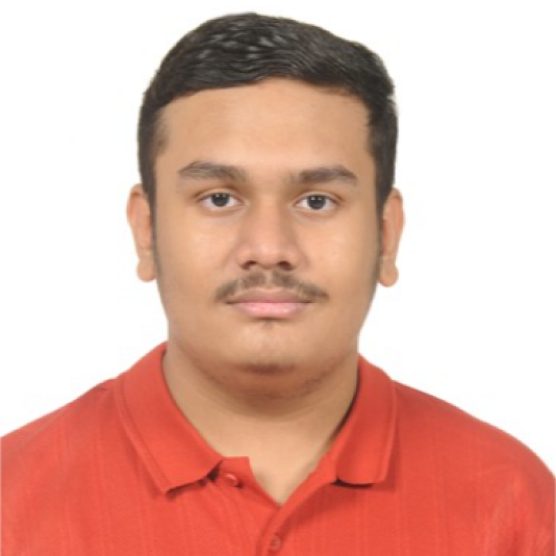
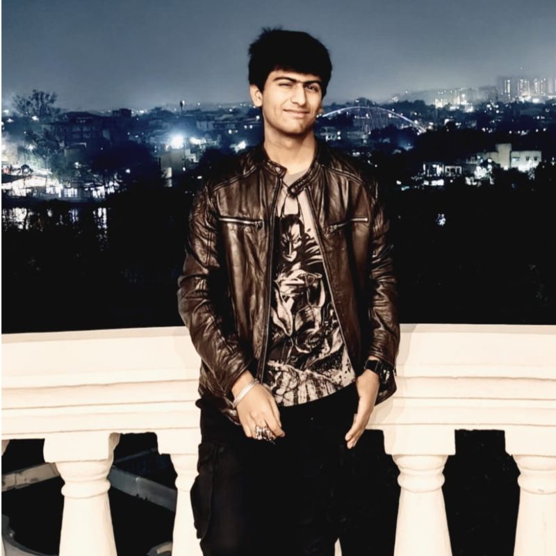
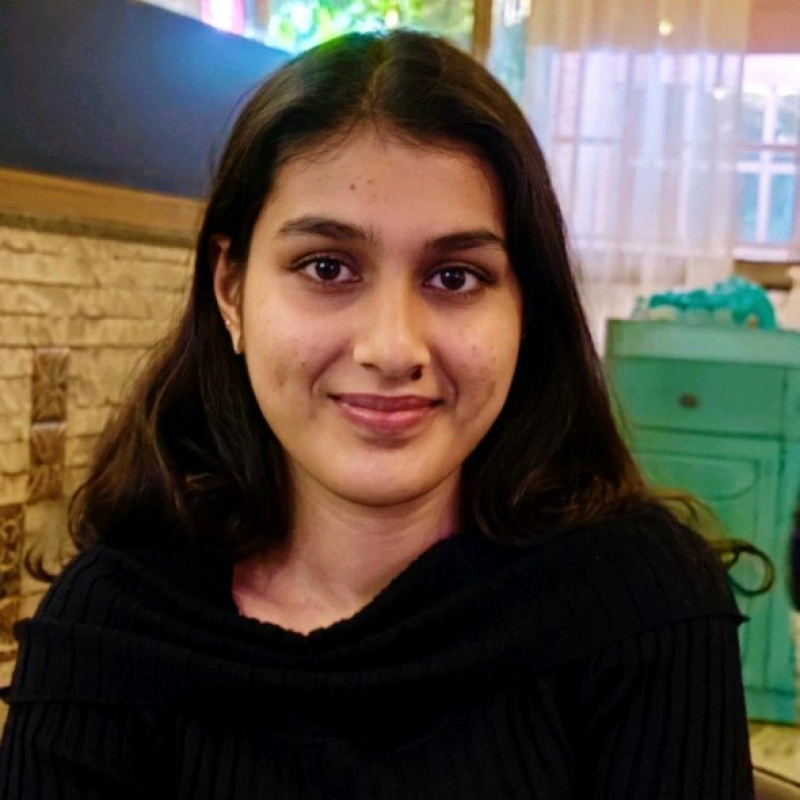

Soham Mukherjee
Head of Avionics, Software and Telemetry
We are building more than a rocket. We are building the habits, systems and leadership required to take an ambitious idea from a blank page to a responsible flight.
To establish a premier, student-led aerospace ecosystem at TIET that bridges academic engineering and real-world aerospace applications.
The club will foster interdisciplinary collaboration, design and build capability, leadership pipelines and the confidence to operate with discipline. Our ambition is to position TIET as a competitive hub for national and international rocketry competitions.
The engineering is demanding. The culture makes it possible.
Students own meaningful work, make decisions with context and leave behind a stronger system for the next cohort.
Every claim earns evidence. Reviews, records and test data turn good intent into dependable engineering.
Safety, respect and responsible operations are not constraints on ambition. They are how ambition lasts.
The vehicle is the shared challenge. The real outcome is a generation of graduates who can lead complex, multidisciplinary projects.
Move beyond knowing how a system works to being accountable for making one work.
Demonstrate applied, multidisciplinary excellence through a project people can see, understand and rally behind.
Build documented processes and leadership pipelines that compound across every new mission.
Heads of Department own their subsystem end to end — design, build, test and the people behind it.

Head of Avionics, Software and Telemetry
Head of Structures and Manufacturing

Head of Aerodynamics and Flight Sciences

Head of Propulsion

Head of Design, Media and Outreach
Head of Operations & Project Management
Head of Systems Engineering and Safety
Head of Recovery, Launch and Ground Systems
Whether you think in thrust curves, composite layups, telemetry packets or checklists, TARA needs people who care about the whole mission.
Join the programme ↗